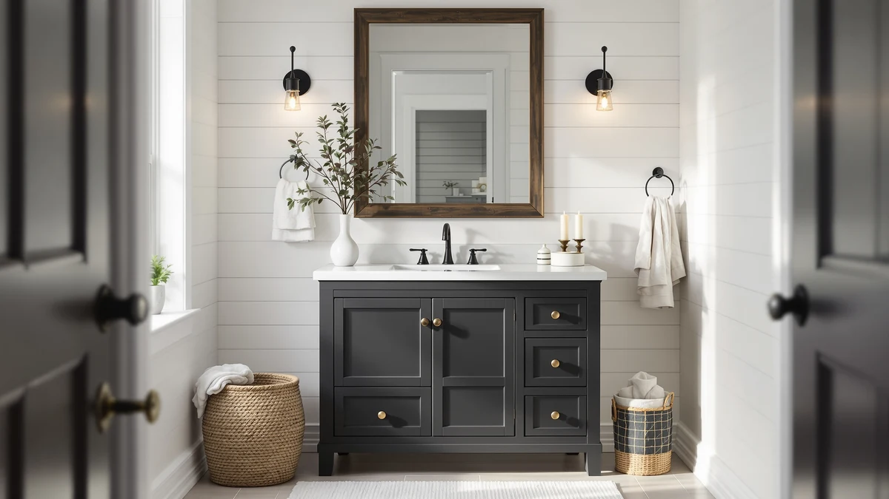

Tennant Brand 24 inch Review (2026): Worth It?
Prices and picks verified as of October 2026. Independent, reader-supported reviews.


Quick Answer
In this Tennant Brand 24 inch review, the Triadsville single-sink vanity costs $640.00 and pairs an MDF and engineered wood cabinet with the smallest footprint of the four options compared here. It costs more than the larger 48 inch and 72 inch alternatives below, but if your bathroom can't fit anything wider, it's the only vanity in this review built for that constraint.
Our pick: Tennant Brand 24 inch Triadsville ($640.00) Check Price on Amazon
Bottom line: our top pick is the Tennant Brand 24 inch Triadsville Small Corner Bathroom at $640.
Things to Know Before You Buy
- Price range: the four vanities in this Tennant Brand 24 inch review span $619.99 to $640.00, a gap of less than $21 despite sharply different sizes.
- Size matters more than price here. The Triadsville's 24 inch footprint costs more than the 48 inch Design House Brookings and the 72 inch double-sink SOFTSEA, so you're paying a premium for a smaller cabinet, not a discount.
- Material: the Triadsville uses MDF and engineered wood construction, which handles standing water differently than solid hardwood over several years, so wiping up splashes around the sink promptly matters more with this build.
- A 24 inch single-sink vanity suits a half bath or a primary bathroom with limited wall space. If two people share the sink daily, the 72 inch SOFTSEA double-sink alternative below is worth comparing despite its much larger footprint.
- Every price here reflects the listing at the time of writing and can shift, so check the current Amazon price before you buy.
This Tennant Brand 24 inch review looks at the Triadsville vanity and lines it up against three alternatives that land within about $20 of its $640.00 price, from a 48 inch single-sink cabinet to a 72 inch double-sink combo. A 24 inch footprint is close to the smallest width most vanity lines offer, which makes it the default pick for powder rooms, half baths, and primary bathrooms too tight for anything wider. At this price, you're paying roughly the same amount as shoppers who get three times the counter space and a second sink, so the size trade-off deserves more scrutiny than the price tag alone suggests. We compare what the Triadsville's MDF and engineered wood build gets you against those larger alternatives, and where each one falls short, before you commit to the smaller footprint.
The short version: the Triadsville is the vanity to buy when 24 inches is the most your bathroom can fit, not when it's simply the cheapest option on the page. Its $640.00 price sits above the Design House Brookings and SOFTSEA alternatives below despite its smaller size, so it earns its spot on footprint alone rather than on value per square inch. If your bathroom has the wall space to spare, the larger alternatives covered later in this review are worth a look before you lock in a 24 inch cabinet. We break down the full comparison, including where each option comes up short, in the sections below.
Why You Should Trust Us
Ilane Tall covers bathroom fixtures and furniture for Best Bathroom Vanities and put together this Tennant Brand 24 inch review by comparing manufacturer specs, current Amazon pricing, and verified buyer feedback rather than repeating marketing copy. We do not run a fake testing lab or claim to have installed every vanity we cover. Instead, we cross-check dimensions, materials, and pricing against what owners report after living with these pieces, and we say so plainly when a listing doesn't have enough review data to back a confident recommendation. That distinction matters in the vanity category, since a listing's photos rarely show how a cabinet or its finish holds up after a year of daily splashes, and a 24 inch cabinet gets less forgiving use of space than a wider one.
Our Research Experience
This review doesn't involve physical testing. We compared the Tennant Brand 24 inch Triadsville against its closest-priced competitors using the manufacturer's listed materials, dimensions, and construction details, then checked those claims against verified owner reviews wherever they exist. For the Vanity Art, Design House, and SOFTSEA alternatives, we followed the same process, weighing size against price rather than assuming a lower number on the price tag automatically means a better deal. When a manufacturer's description and the buyer reviews disagree, we note the disagreement instead of picking whichever version sounds better. This Tennant Brand 24 inch review relies on that research process, not a lab, to reach its verdict.
Overview & Specs

Tennant Brand 24 inch Triadsville
What we like
- 24 inch width fits the tightest single-sink cutouts, including half baths and powder rooms
- MDF and engineered wood cabinet construction with a finished look that doesn't require assembly guesswork
- Fits bathrooms too small for the 48 inch and 72 inch alternatives covered later in this review
Flaws but not dealbreakers
- At $640.00 it costs more than the larger 48 inch Design House Brookings and the 72 inch double-sink SOFTSEA below
- MDF and engineered wood construction is more moisture-sensitive than solid hardwood over the long run
- A single 24 inch basin leaves no room for two people to share the sink at once
| Material | MDF / engineered wood |
| Size | 24 inch |
The Tennant Brand 24 inch Triadsville anchors this Tennant Brand 24 inch review because it's built for bathrooms where 48 inches or more simply won't fit. The cabinet uses an MDF and engineered wood build sized to a 24 inch footprint, close to the smallest width most vanity lines offer. At $640.00 it costs more than every alternative in this review, including vanities twice its width, which tells you the premium here pays for fitting a tight space, not for getting more vanity per dollar. For a half bath or a primary bathroom with a narrow wall, that trade-off is often worth it, since there's no cheaper way to add a built-in single-sink cabinet to a space that small.
Where the Triadsville comes up short is value relative to its larger competitors. The Design House Brookings below has 48 inches of counter space for about $5 less, and the SOFTSEA has a full 72 inch double-sink layout for roughly $20 less, so the Triadsville only makes sense once your bathroom's dimensions rule those options out. Engineered wood also means wiping up standing water around the sink basin promptly, since MDF cores swell faster than solid wood when moisture sits on the surface. If your bathroom has even a few extra inches of wall space, measure twice before paying a premium for the smallest option on this list.
What We Liked
Across this Tennant Brand 24 inch review, the Triadsville's biggest strength is simply fitting where other vanities can't. Its 24 inch footprint drops into half-bath and powder-room cutouts that the 48 inch and 72 inch alternatives below can't touch, and the MDF and engineered wood cabinet looks finished rather than like a budget flat-pack kit. For a small bathroom remodel, having a single-sink option that doesn't require custom cabinetry is worth something on its own, especially since narrower vanities at this build quality are harder to find than wider ones.
What Could Be Better
The biggest gap in this Tennant Brand 24 inch review is value for the dollar. At $640.00, the Triadsville costs more than a 48 inch vanity and more than a 72 inch double-sink combo, so you're paying a premium strictly for the smaller size. MDF construction also asks for more care around standing water than solid wood, which matters in a bathroom that sees daily use. Buyers who have any flexibility on width should measure their bathroom twice before assuming the smallest option is also the right one for their budget.
Who Is It For?
This 24 inch vanity, the focus of this Tennant Brand 24 inch review, fits a half bath, powder room, or primary bathroom where 48 inches won't fit against the wall. It's a reasonable match for a small-space remodel where floor plan, not price, is the deciding factor. It's a weaker fit if you have even a little extra wall space, since the Design House Brookings below gets you double the counter at a lower price, or if two people share the bathroom every morning, since a single 24 inch basin leaves no room for that. Renters who might move within a year or two may also prefer a lower-commitment option before paying a premium for a fixed, compact footprint.
Alternatives to Consider
If the Triadsville's size works for your bathroom but the price doesn't sit right, or if you have the wall space to go bigger, these three alternatives from this Tennant Brand 24 inch review cover more counter space, a double-sink layout, and a lower price than the Triadsville across the board.

Editor's Pick
Vanity Art 72 Inch Bathroom
A full 72 inch single-cabinet vanity for about a dollar less than the 24 inch Triadsville, giving you roughly three times the counter space if your bathroom has the wall to spare.
$638.99
Check Price on Amazon
Best Value
Design House Brookings 48 Inch
A 48 inch cabinet priced nearly $5 below the Triadsville, doubling your counter space for less money if a half bath isn't your constraint.
$635.41
Check Price on Amazon
Premium Choice
SOFTSEA 72 Inch Double Sink
A 72 inch double-sink layout for about $20 less than the single-basin Triadsville, worth considering if two people share the bathroom every morning.
$619.99
Check Price on AmazonHow much does a 24 inch bathroom vanity cost?
Based on the four vanities in this Tennant Brand 24 inch review, expect to pay between $619.99 and $640.00, even though the sizes range from a single 24 inch basin to a 72 inch double-sink layout.
Is a 24 inch vanity big enough for a primary bathroom?
It can work in a primary bathroom with a narrow layout, but most people find 24 inches comfortable only in a half bath or powder room.
Frequently Asked Questions
How much does a 24 inch bathroom vanity cost?
Based on the four vanities in this Tennant Brand 24 inch review, expect to pay between $619.99 and $640.00, even though the sizes range from a single 24 inch basin to a 72 inch double-sink layout. The 24 inch Triadsville sits at the top of that range despite being the smallest cabinet of the group, since compact footprints command a premium when they're built to fit tight spaces.
Is a 24 inch vanity big enough for a primary bathroom?
It can work in a primary bathroom with a narrow layout, but most people find 24 inches comfortable only in a half bath or powder room. If your primary bathroom has 48 inches or more of wall space, the Design House Brookings below gets you double the counter for less money than the Triadsville.
Is MDF or engineered wood durable enough for a bathroom vanity?
It can be, as long as you wipe up standing water around the sink promptly. Engineered wood and MDF cores, like the one in the Triadsville, hold up fine under normal bathroom humidity but swell faster than solid wood or plywood if water sits on the surface for hours at a time. A vanity with a properly sealed top and good bathroom ventilation minimizes most of that risk.
Final Verdict
This Tennant Brand 24 inch review comes down to how much wall space your bathroom actually has. The Tennant Brand Triadsville is the pick when 24 inches is the most you can fit, since no other vanity on this list goes that small. If you have even a few extra inches to spare, the Design House Brookings or the SOFTSEA double-sink combo deliver more counter space for less money, so measure your bathroom twice before paying the Triadsville's premium for a compact footprint. Whichever option you choose, confirm the current price and stock before ordering, since Amazon listings in this category shift more often than the pages themselves get updated.